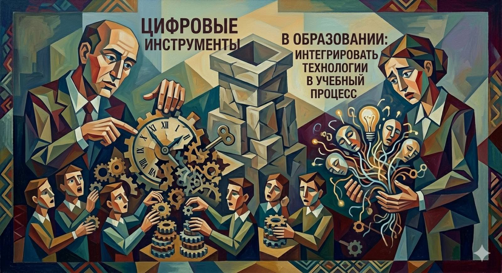
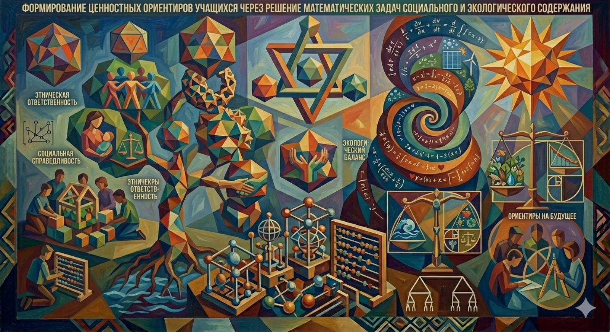

Блог: статьи и новости
Статья
Развитие профессионального мастерства педагога
Конкурсы педагогического мастерства — мощный ресурс для профессионального роста. Как перенести конкурсный опыт в повседневную работу и повысить качество образования?
Читать полную версию
Статья
Цифровые инструменты в образовании
Современные цифровые инструменты помогают сделать обучение интерактивным и персонализированным. Обзор платформ и методик интеграции.
Читать полную версию
Статья
Промт-грамотность как новая компетенция в обучении математике
Формирование prompt-грамотности у учащихся: как научить эффективно взаимодействовать с ИИ на уроках математики, развивая критическое мышление.
Читать полную версию
Статья
Формирование ценностных ориентиров через решение математических задач
Контекстные задачи экологической и социальной направленности как инструмент воспитания ответственности и формирования ценностных ориентиров школьников.
Читать полную версию